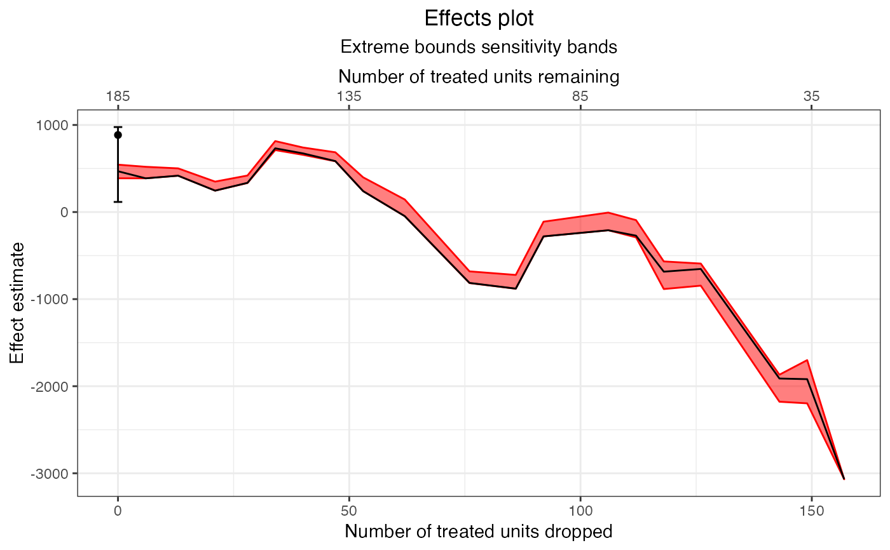

estimateEffects.RdestimateEffects() estimates the effect of the treatment on the supplied outcome at points along the frontier, optionally including model dependence bounds.
estimateEffects(frontier.object,
outcome,
base.form = NULL,
n.estimated = 250,
N, Ndrop,
method = c("none", "extreme-bounds",
"athey-imbens"),
model.dependence.ests = 100,
specifications = NULL,
cutpoints = NULL,
cutpoint.method = c("mean", "median",
"segmented"),
seed = NULL,
alpha = 0.05,
verbose = TRUE,
cl = NULL,
...)
# S3 method for frontierEstimates
print(x, ...)a matchFrontier object; the output of a call to makeFrontier().
the name of the outcome variable in the dataset supplied to makeFrontier(). Not required if base.form is supplied.
a model formula with the outcome on the left hand side and the treatment (and optionally covariates) on the right hand side. The model is used to estimate treatment effects at each point along the frontier as well as their model sensitivity (if requested). If omitted, will use a simple regression of the supplied outcome variable on the treatment.
the number of points along the frontier to estimate. Estimating effects at every point on the frontier can be time-consuming for large frontiers, especially when model dependence bounds are also computed, so using values less than the number of points can save time at the expense of providing less detail in the frontier estimates plot. The default is 250 or the number of points, whichever is smaller.
the number of units remaining or dropped, respectively, in the sample at the desired points on the frontier for which effects are to be estimated. Should be a vector of 2 values containing the start and end of the range of the desired points. Exactly one of N or Ndrop can be specified. If both are omitted, will estimate effects along the full range of the frontier.
the method of computing model dependence bounds. Can be one of "extreme-bounds" or "athey-imbens" for the extreme bounds or Athey-Imbens procedures, respectively, or "none" to not compute model dependence bounds. Abbreviations allowed. Default is no model dependence bounds. See modelDependence(). When using metric = 'dist' in makeFrontier(), only "extreme-bounds" is allowed.
arguments passed to modelDependence() when method is not "none".
the alpha value used to select the critical test statistic used in computing confidence intervals. Default is .05 for pointwise 95% confidence intervals.
logical; whether to print additional information about the process of estimating effects and sensitivity bounds (if requested). A progress bar will be displayed if TRUE.
a cluster object created by parallel::makeCluster(), or an integer to indicate number of child-processes (integer values are ignored on Windows) for parallel evaluations. See pblapply() for details.
a frontierEstimates object; the output of a call to estimateEffects().
for estimateEffects(), prop.estimated, which determines the proportion of points along the frontier to estimate, can be passed instead of n.estimated. Prior versions of estimateEffects() used prop.estimated, and this will continue to be supported.
Ignored for print().
estimateEffects() works by creating a dataset at each point along the frontier using the units that remain and fitting the supplied outcome model to those datasets, returning the point estimate, confidence interval bounds, and, if requested, model dependence bounds. The outcome model fit is that supplied to base.form, and the coefficient on the treatment is used at the treatment effect estimate. Currently, only linear models can be used and the treatment effect corresponds to the difference in means. Models will only be fit for datasets with 15 or more units.
Confidence intervals are computed using HC3 robust standard errors as implemented in sandwich. Note that robust standard errors may not be accurate for matching with replacement; only the Abadie-Imbens (2006) standard errors implemented in the Matching package are accurate. Including covariates in the outcome model improves the performance of the standard errors, and so is recommended here and in general (Hill & Reiter, 2006).
The model dependence bounds are computed using the same machinery as is used with modelDependence() and uses many of the same arguments.
A frontierEstimates object with the following components:
a vector containing the cumulative number of units dropped at each point on the frontier for which effects were estimated..
a vector containing the treatment effect estimates at each point on the frontier for which effects were estimated.
a list containing the upper and lower confidence interval limits at each point on the frontier for which effects were estimated.
a list containing the upper and lower model dependence bounds at each point on the frontier for which effects were estimated.
the argument supplied to QOI in the original call to makeFrontier().
the argument supplied to method.
the number of units present at the first point in the frontier (i.e., the original sample). For the FSATT, this is the number of treated units; for the SATT, this is the number of control units.
the name of the treatment variable.
the names of the covariates matched on in the original call to makeFrontier().
the formula used for the outcome models.
a list contain three elements computed in the unadjusted sample: the effect estimate (coef), the confidence interval (CI), and the model dependence bounds (mod.dependence).
the original function call.
If method = "extreme-bounds", the output will additionally have the attribute "specifications" containing the model specifications that were used in computing the model dependence bounds.
Abadie, A., & Imbens, G. W. (2006). Large Sample Properties of Matching Estimators for Average Treatment Effects. Econometrica, 74(1), 235-267. https://doi.org/10.1111/j.1468-0262.2006.00655.x
Hill, J., & Reiter, J. P. (2006). Interval estimation for treatment effects using propensity score matching. Statistics in Medicine, 25(13), 2230-2256. https://doi.org/10.1002/sim.2277
King, G., Lucas, C., & Nielsen, R. A. (2017). The Balance-Sample Size Frontier in Matching Methods for Causal Inference. American Journal of Political Science, 61(2), 473-489. doi:10.1111/ajps.12272
makeFrontier() for constructing the frontier, plot.frontierEstimates() for plotting effect estimates and bounds along the frontier, generateDataset() for extracting a dataset at one point on the frontier, modelDependence() for computing model dependence bounds for a single dataset, vignette("estimating-effects", package = "MatchIt") for instructions on estimating effects after matching.
data("lalonde", package = "MatchIt")
#Pair distance frontier for FSATT
f1 <- makeFrontier(treat ~ age + educ + married + re74,
data = lalonde,
QOI = "FSATT",
metric = "dist",
verbose = FALSE)
f1
#> A matchFrontier object
#> - quantity of interest: FSATT
#> - imbalance metric: average pairwise distance
#> - treatment: treat
#> - covariates: age, educ, married, re74
#> - number of points: 118
e1 <- estimateEffects(f1,
base.form = re78 ~ treat + age +
educ + married + re74,
n.estimated = 20, #Should be higher
method = "extreme-bounds",
model.dependence.ests = 51)
#> Getting extreme bounds model specifications...
#> Estimating effects...
#>
| | 0 % ~calculating
|+++ | 5 % ~18s
|+++++ | 10% ~11s
|++++++++ | 14% ~08s
|++++++++++ | 19% ~07s
|++++++++++++ | 24% ~06s
|+++++++++++++++ | 29% ~05s
|+++++++++++++++++ | 33% ~05s
|++++++++++++++++++++ | 38% ~04s
|++++++++++++++++++++++ | 43% ~04s
|++++++++++++++++++++++++ | 48% ~04s
|+++++++++++++++++++++++++++ | 52% ~03s
|+++++++++++++++++++++++++++++ | 57% ~03s
|+++++++++++++++++++++++++++++++ | 62% ~02s
|++++++++++++++++++++++++++++++++++ | 67% ~02s
|++++++++++++++++++++++++++++++++++++ | 71% ~02s
|+++++++++++++++++++++++++++++++++++++++ | 76% ~01s
|+++++++++++++++++++++++++++++++++++++++++ | 81% ~01s
|+++++++++++++++++++++++++++++++++++++++++++ | 86% ~01s
|++++++++++++++++++++++++++++++++++++++++++++++ | 90% ~01s
|++++++++++++++++++++++++++++++++++++++++++++++++ | 95% ~00s
|++++++++++++++++++++++++++++++++++++++++++++++++++| 100% elapsed=05s
#> Done!
e1
#> A frontierEstimates object
#> - quantity of interest: FSATT
#> - model sensitivity method: extreme bounds
#> - number of specifications: 51
#> - number of estimates: 20
#> - treatment: treat
#> - covariates: age, educ, married, re74
#> - outcome model: re78 ~ treat + age + educ + married + re74
plot(e1, band = "model-dependence")

plot(e1, band = "confidence")
summary(e1, Ndrop = c(10, 85))
#> Summary of effectEstimates object:
#>
#> Est CI 2.5 % CI 97.5 % MD lower MD upper
#> At Ndrop = 13 418 -1795 2630 418 502
#> At Ndrop = 86 -879 -3513 1754 -880 -722
# Only estimate effects for a subset of the forntier
# (points with remaining sample sizes between 50 and
# 100)
e2 <- estimateEffects(f1,
base.form = re78 ~ treat + age +
educ + married + re74,
N = c(50, 100))
#> Estimating effects...
#>
| | 0 % ~calculating
|++ | 3 % ~01s
|+++ | 5 % ~00s
|+++++ | 8 % ~00s
|++++++ | 11% ~00s
|+++++++ | 14% ~00s
|+++++++++ | 16% ~00s
|++++++++++ | 19% ~00s
|+++++++++++ | 22% ~00s
|+++++++++++++ | 24% ~00s
|++++++++++++++ | 27% ~00s
|+++++++++++++++ | 30% ~00s
|+++++++++++++++++ | 32% ~00s
|++++++++++++++++++ | 35% ~00s
|+++++++++++++++++++ | 38% ~00s
|+++++++++++++++++++++ | 41% ~00s
|++++++++++++++++++++++ | 43% ~00s
|+++++++++++++++++++++++ | 46% ~00s
|+++++++++++++++++++++++++ | 49% ~00s
|++++++++++++++++++++++++++ | 51% ~00s
|++++++++++++++++++++++++++++ | 54% ~00s
|+++++++++++++++++++++++++++++ | 57% ~00s
|++++++++++++++++++++++++++++++ | 59% ~00s
|++++++++++++++++++++++++++++++++ | 62% ~00s
|+++++++++++++++++++++++++++++++++ | 65% ~00s
|++++++++++++++++++++++++++++++++++ | 68% ~00s
|++++++++++++++++++++++++++++++++++++ | 70% ~00s
|+++++++++++++++++++++++++++++++++++++ | 73% ~00s
|++++++++++++++++++++++++++++++++++++++ | 76% ~00s
|++++++++++++++++++++++++++++++++++++++++ | 78% ~00s
|+++++++++++++++++++++++++++++++++++++++++ | 81% ~00s
|++++++++++++++++++++++++++++++++++++++++++ | 84% ~00s
|++++++++++++++++++++++++++++++++++++++++++++ | 86% ~00s
|+++++++++++++++++++++++++++++++++++++++++++++ | 89% ~00s
|++++++++++++++++++++++++++++++++++++++++++++++ | 92% ~00s
|++++++++++++++++++++++++++++++++++++++++++++++++ | 95% ~00s
|+++++++++++++++++++++++++++++++++++++++++++++++++ | 97% ~00s
|++++++++++++++++++++++++++++++++++++++++++++++++++| 100% elapsed=00s
#> Done!
e2
#> A frontierEstimates object
#> - quantity of interest: FSATT
#> - model sensitivity method: none
#> - number of estimates: 36
#> - treatment: treat
#> - covariates: age, educ, married, re74
#> - outcome model: re78 ~ treat + age + educ + married + re74
plot(e2)